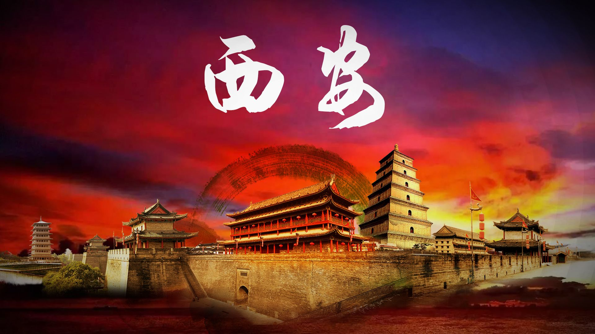
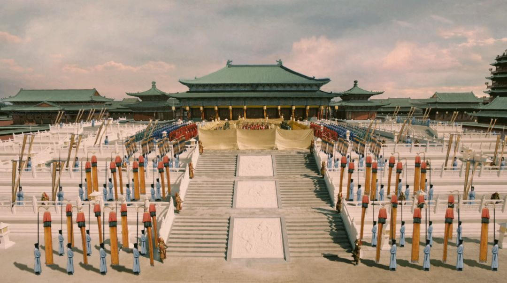
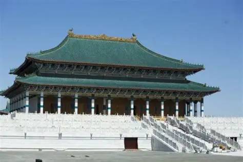
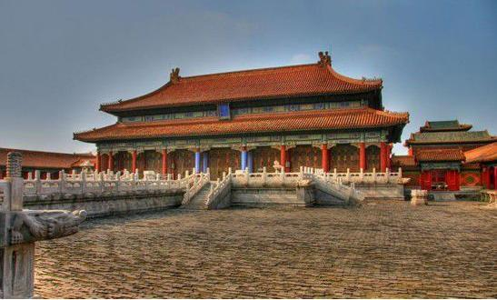
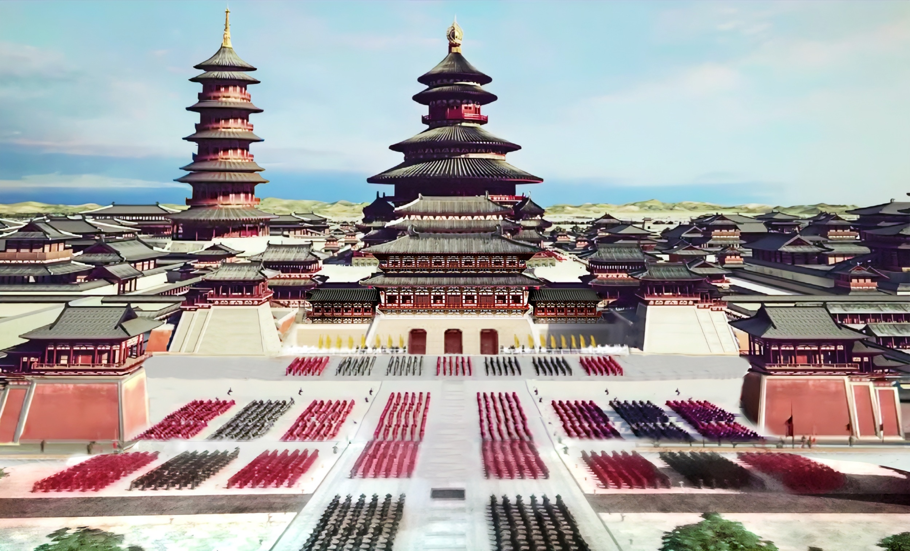

中国古代经典皇宫类型

明清紫禁城
中国皇宫建筑的巅峰之作，以中轴对称、前朝后寝为核心布局，太和殿、乾清宫等建筑气势恢宏，黄琉璃瓦、红墙朱柱彰显皇权至高无上。
所在地：北京

唐代大明宫
盛唐皇宫代表，规模宏大，含元殿、麟德殿等建筑雄浑开阔，采用抬梁式木构架，体现“万国来朝”的盛唐气象，是古代宫殿的典范。
所在地：西安

宋代东京皇宫
北宋都城汴梁的皇宫，建筑风格趋于精致，取消了唐代的高阁布局，增加园林景观，大庆殿、垂拱殿兼具礼制与实用功能。
所在地：开封

元代大都皇宫
蒙古族统治下的皇宫建筑，融合草原文化与中原规制，宫城布局简约大气，殿宇多用白墙蓝瓦，体现游牧民族的审美特色。
所在地：北京

南京明故宫
明代初期皇宫，是北京紫禁城的蓝本，布局遵循“左祖右社、前朝后寝”，奉天殿规模远超太和殿，后因战乱损毁，仅存遗址。
所在地：南京

隋唐洛阳紫微城
隋唐东都皇宫，因山就势布局，明堂、天堂等建筑高耸巍峨，融合南北建筑特色，是古代宫廷建筑与自然结合的典范。
所在地：洛阳